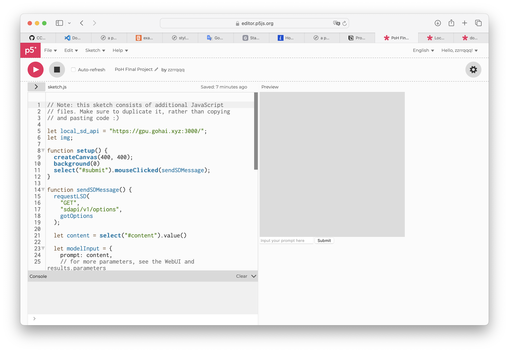

AI and Bias
To experience how AI are biased, it's better to draw something yourself with prompts you think may lead to bias or just random prompts to see if any bias occurs here's a website where you can draw with the famous image generator Stable Diffusion as illustrated Please first press the "play button"(the grey one with a white triangle inside) to start, then type your prompt in the box which says "Input your prompt here", click "submit" and wait for your picture to complete!
Hope you've explored the bias of AI on your own. Bias in AI not only refer to those mapping the existing problems like race or gender discrimination, but also refer to new bias specifically created in the process of interacting with the AI, which is beyond people's prediction. There's no doubt that the generated images are likely to represent certain bias, as it's impossible to ensure the data from huge databases on which these generative AIs are trained is not biased. These databases simply collect information from the Internet without checking if there are stereotypes and other problems, it's also impossible for people to work on such amount of data. What makes the problem worse is that unlike race or gender bias, a lot of bias in AI will never be known or predicted until they were detected through people's interaction with the tools (Baker 1075). One of the examples is the Machine Learning Janus problem: It's highly possible for images and 3D models generated by generative AI to have more than 1 face, just like the god Janus with two faces in the Roman Myths. According to people's research, the problem is most likely to happen because of the over-emphasize on faces during the training process. (Steyerl 1). Other examples of these unpredictable bias include AI using the art style of "Starry Night" when asked to draw in "Van Gogh Style" (Srinivasan 10).
It's people's common sense that bias exists in AI represents the bias already existed, and using AI is just intensifying and strengthening these problems. But the facts showcase that much more problems are detected. Although a lot of artists complained about AI, it is their using AI to pursue art that leads to their detection of the problem. Machine learning is complicated. Even those who created it can't fully understand how it works or whether it's working in a right way. We need ways to find out how these AI and databases are working, and whether they are working in a correct way. Using them in drawing is one of the most effective ways to examine whether the super technology designed for art works well. Art is about innovation and creativity, artist's different perspectives and various kinds of practice of machine learning and artificial intelligence can contribute greatly to the development and fine-tuning of the super computer.